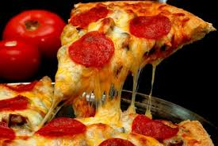

La pizza es un pan plano horneado, habitualmente de forma redonda, elaborado con harina de trigo, sal, agua y levadura, cubierto con salsa de tomate y queso. Existe gran cantidad de variedades, según la forma del pan, la manera de cocinarlo y el agregado de diversos ingredientes (salami, tomate, champiñones, cebolla, jamón, aceitunas, morrones, ananá, huevo, verduras, anchoas, palmitos, etc.) y salsas. Su origen es dudoso, pero ha sido tradicionalmente atribuido a la gastronomía de Italia y más puntualmente a la cocina napolitana, razón por la cual la Unión Europea le reconoció en 2010 a la pizza napolitana la denominación de origen de Especialidad tradicional garantizada. En 2017 la UNESCO reconoció el arte de los pizzaioli (pizzeros) napolitanos como Patrimonio Cultural Inmaterial de la Humanidad.
El pepperoni es un embutido similar al salami muy sabroso y con un toque picantón. Aunque parezca una palabra italiana no lo es, dado que en Italia este ingrediente se denomina salsiccia napoletana piccante y en varios países de Latino américa es conocido como longaniza. Si te gusta, no puedes perderte esta pizza casera con pepperoni al estilo Domino’s.